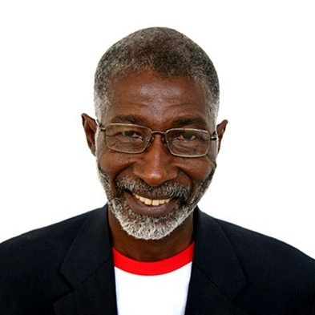

Nii Quaynor
Dr. Quaynor established some of Africa’s first
internet connections and played a significant role
in setting up the African Network Operators Group.
Nii has been recognized by the Internet Society for
his many achievements; he was inducted into the
Internet Hall of Fame in 2013.
He is a member of the Internet Governance Forum,
the United Nations Secretary General Advisory Group
on Information and Communications Technology, and
the Chairman of the Ghanaian company Network
Computer Systems. Nii is also member of the ITU
Telecom Board, Chair and of the OAU Internet Task
Force, President of the Internet Society of Ghana,
and member of the Worldbank Infodev TAP.
Pindar Wong
Pindar Wong has been actively engaged in Internet
and Web technologies since the early days.
He co-founded Hong Kong’s first licensed internet
provider (ISP) in 1993. Since then he has served on
many committees and boards building core
institutional infrastructure for the Web including
serving on the Board of the Internet Corporation for
Assigned Names and Number (ICANN).
He currently serves on the Digital 21 Strategy
Advisory Committee of the Hong Kong Government
and as the co-public lead of Creative Commons Hong
Kong.
Kaliya Young
Kaliya Young, also known as “Identity Woman”, has
spent the last 15 years of her career focused on one
thing, supporting the emergence of an identity layer
of the internet that works for and empowers people.
She is an internationally recognized expert in the
field of user-centric digital identity and personal
data.
Kaliya is an interactive conference designer and
facilitator, having designed and facilitated over
200 unconferences in the past 10 years. She
co-founded the Internet Identity Workshop in 2005;
that twice a year brings together the largest
concentration on the planet of talent dedicated to
designing and building identity systems that empower
individuals.
Markus Kummer
Markus Kummer is an Internet governance and policy
expert with extensive experience in government,
the United Nations, Internet institutions and
non-governmental organisations, including the
Internet Corporation for Assigned Names and Number
(ICANN) and the Internet Society. From 2004-2011,
he worked for the United Nations, first as Executive
Coordinator of the Working Group on Internet
Governance and subsequently of the Secretariat
supporting the Internet Governance Forum (IGF).
Markus served as a career diplomat in several
functions in the Swiss Foreign Ministry between
1979 and 2004.
He is based in Geneva, Switzerland.
Kim Duffy
Kim Hamilton Duffy is CTO of Learning Machine, where
she builds decentralized, recipient-owned
credentialing solutions. She is Principal Architect
for Blockcerts, an initiative led by Learning
Machine and MIT Media Lab, providing open standards,
open source implementations, and an ecosystem
enabling decentralized, blockchain-based credentials.
Kim is co-chair of the W3C Credentials Community
Group (CCG), the community group driving the
Decentralized Identifiers (DID) specification. Her
community contributions include co-developing the
BTCR DID method specification and its open source
implementations, driving Open Badges and Verifiable
Credentials alignment, and advancing EDU/OCC use
cases.
Paul V. Mockapetris
Paul V. Mockapetris co-invented the Internet Domain
Name System (DNS) in 1983, making the internet
more accessible for widespread use. Paul is a fellow
of the Institute of Electrical and Electronics
Engineers (IEEE). He is currently chief scientist at
ThreatStop. He continues to work on DNS.
Christopher Allen
Christopher Allen is an entrepreneur and
technologist perhaps best known for developing SSL
and co-authoring the IETF TLS internet draft that is
now at the heart of all secure commerce on the World
Wide Web.
Christopher’s recent emphasis has been on engines of
trust such as blockchain, smart contracts, and smart
signatures, in particular decentralized
self-sovereign identity. Christopher is co-chair of
the W3C Credentials CG working on standards for
decentralized identity. He facilitates a semi-annual
design workshop called “Rebooting the Web of Trust”,
that focuses on the next generation of internet
privacy, security, and identity software.
Joe Andrieu
Joe Andrieu, PMP, is principal of Legendary
Requirements, a consultancy focused on responsive
requirements for digital identity and blockchain
systems. He is co-chair of the World WIde Web
Consortium (W3C)'s Credentials Community Group and
board member of Rebooting the Web of Trust.
He is the creator of the Information Lifecycle
Engagement Model, the lead author of Joram 1.0.0 and
Amira 1.0.0, and author of the Functional Identity
Primer. A veteran of the user-centric identity and
vendor relationship management (VRM) movements, he
helps organizations deeply understand human
requirements to deliver products that advance human
dignity in our digitally internetworked world.